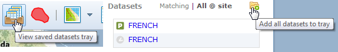
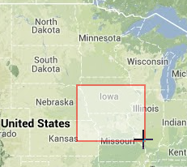

- many interface elements have tooltips that display additional information when you mouse-over them for a second

- mouse-over items in the Dataset Tray, Current Searches list, and Site Inspector dataset lists to display additional controls for working with those items
- application windows remain open until you choose to close them; they are movable and retain their position when closed and re-opened
- when setting up a search, pressing ENTER on your keyboard will submit the query
- holding down the SHIFT key while you click on the map enables you to define an extent to which to zoom

Created with the Personal Edition of HelpNDoc: Easy CHM and documentation editor